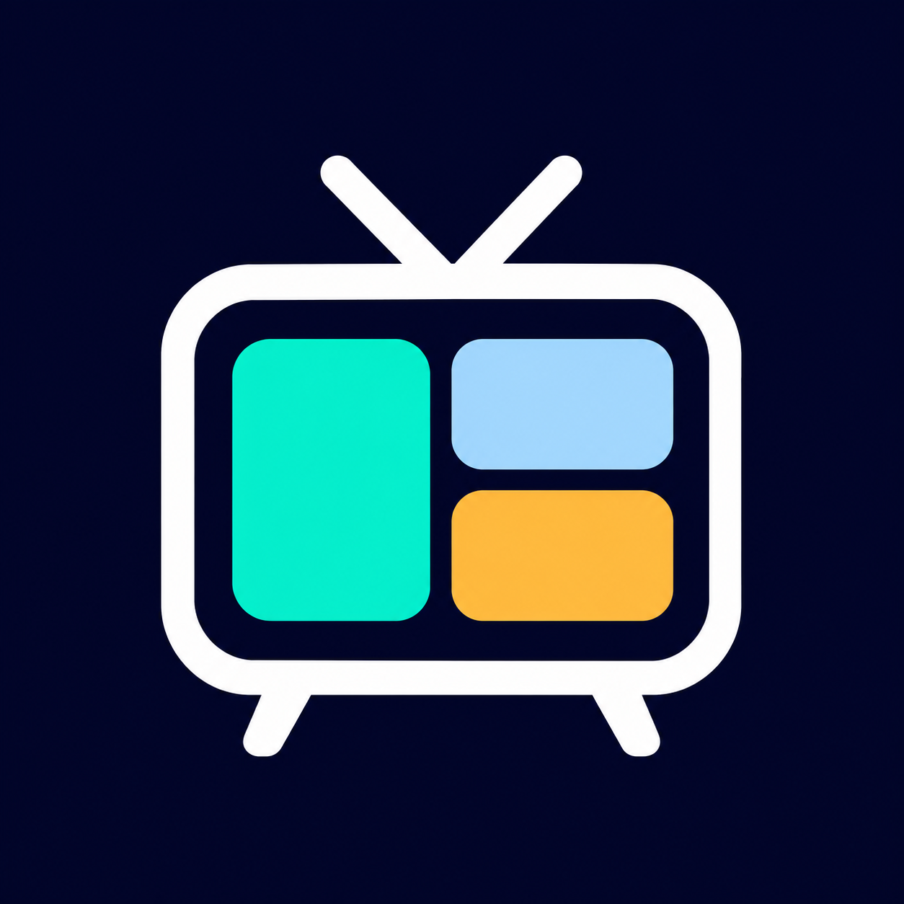
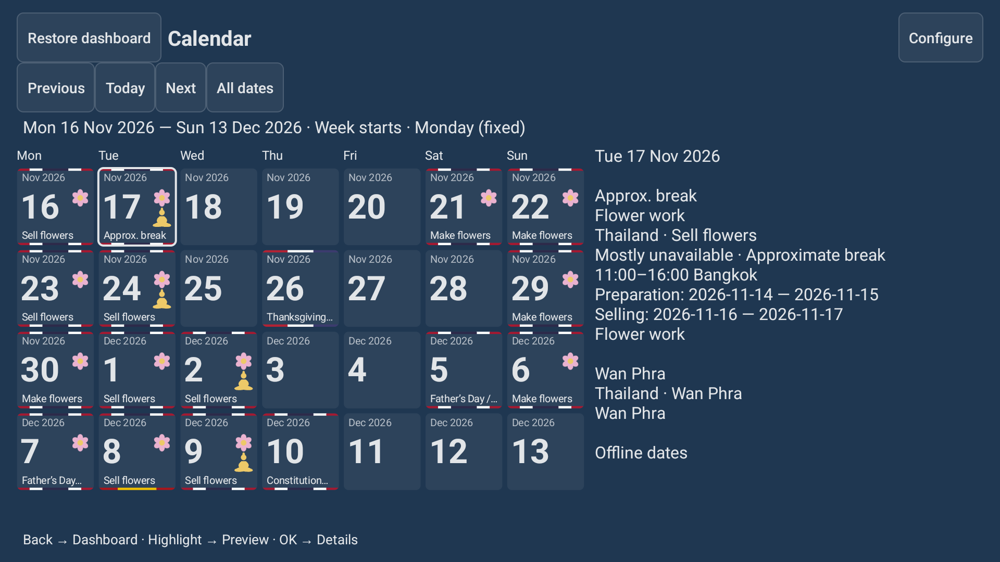
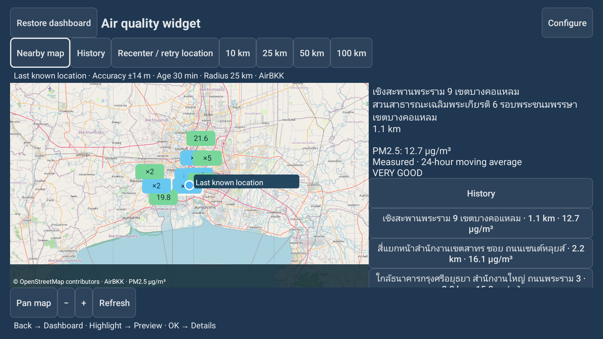

Homeboard TV
ANDROID TV & GOOGLE TV
OPEN SOURCE · IN DEVELOPMENT
Your TV. Your home base.
Turn your TV’s home screen into a useful daily dashboard.
Rain, upcoming dates, air quality, world clocks and favorite apps—arranged your way.
Actual Cast1 dashboard · YouTube in Favorites · Fresh test layout, November 2026.
Add the widgets you want
Choose built-in Rain, Calendar, Air quality and Favorites widgets from Add widget. Configure each one for your home.
Size them to suit your screen
Resize widgets on the dashboard grid. Keep summaries compact or give charts more room; press OK for the full-screen view.
Arrange your dashboard your way
Move widgets into place, group what matters and add pages when you need them. Change your mind? Hold Back to undo.
Built on shared foundations
Based on CleanYourTV. Supports Projectivy wallpaper-provider v1, including Overflight backgrounds. Install providers separately; Projectivy Launcher is not required.
Set it up from your phone. Enjoy it from the sofa.
Scan, approve and customize in your phone browser. Edit widgets, reorder favorites and save a shortcut for each TV. No extra phone app or account.
Press OK for a bigger view
Hold OK to customize
Hold Back to undo
01 Calendar · expanded view

02 PM2.5 · expanded view

Press OK to go deeper: four weeks of dates, or a map of nearby air-quality stations. Actual TV captures.